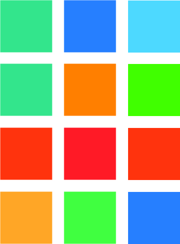

Colorlender ist eine Webapp die hilft das aktuelle Wetter anschaulich und leichtverständlich mit den Vorjahren zu vergleichen. Es wird immer der aktuelle Colorlender angezeigt und daneben als Vergleich dazu kann man sich den Colorlender aus einem anderen Jahr daneben anzeigen lassen.
Der Colorlender gibt jedem Tag anhand der Durchschnittstemperatur eine Farbe die vorher anhand einer Skala ausgewählt wird. Kalt blau, warm rot.
Rechts auf der Website wird der aktuelle Colorlender als Rechteckiges Raster dargestellt und links kann man zwischen den Jahren wechseln.
Man wählt den anderen Colorlender in dem man durch die Jahre scrollt oder die Jahreszahl in der Suche eingibt. Man kann auf ihn klicken,dann werden die Monate angezeigt ( mit der Farbe der durchschnittstemparatur) - wenn man noch mal einen monat auswählt sieht man die einzelnen Tage angezeigt
Es gibt verschiedene Anzeigemöglichkeiten ( Klassisch, als Strahl, als Kreis, als Stern)
Man hat auch die Möglichkeit, sich eine Postkarte oder einen Sticker zu erstellen, oder seinen eigenen Colorlender auf Socialmedia zu teilen.
Weil Farben leichter zu vergleichen sind als langweilige Tabellen, ist der Colorlender perfekt geeignet für jüngere Menschen, den Klimawandel leicht vergleichbar zu machen.
Man kann auch einige Jahre in die Zukunft springen und sich anschauen, wie Colorlender in der Zukunft aussen werden, wenn die Prognosen eintreffen.